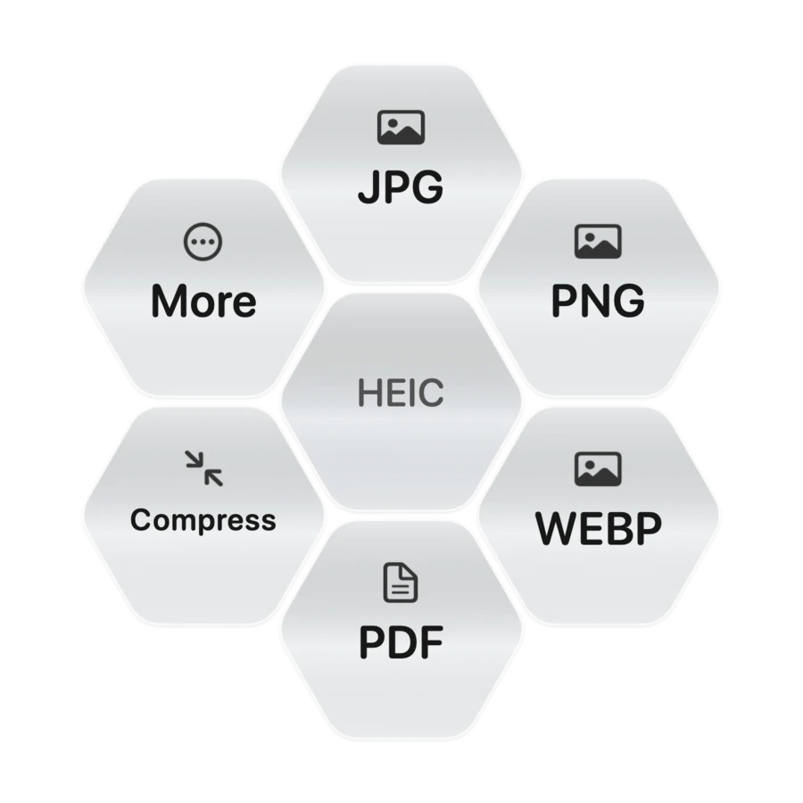

Convert in batches.
Work with images, audio, video, documents, spreadsheets, slides, and PDFs.
HONEYCOMB
Convert, crop, compress, and zip files with a single shortcut, right from your desktop.

THE GESTURE
Pick one file or a batch on your Desktop, in Finder, or in File Explorer.
Hold your shortcut and move the pointer. Honeycomb shows the options for your selection.
Choose your format. The result saves beside the original under a unique name.
FILE TOOLS
Convert what you have into what you need. Available actions follow the files you select.
Work with images, audio, video, documents, spreadsheets, slides, and PDFs.
Crop or resize an image, convert the result if you need to, and bundle it as a ZIP.
DOWNLOAD
Version 2.0.2 · macOS 13 or later
Download for Macinstall-honeycomb.command./bin/bash followed by a space, drag the extracted script into Terminal, and press Return.Version 0.1.0 · Windows 11
Download for WindowsHoneycomb-Windows-Setup.exe on Windows 11. Setup installs Honeycomb for your user account.This unsigned preview is intended for testing. Windows installation, Explorer integration, and full Mac feature parity still need verification.